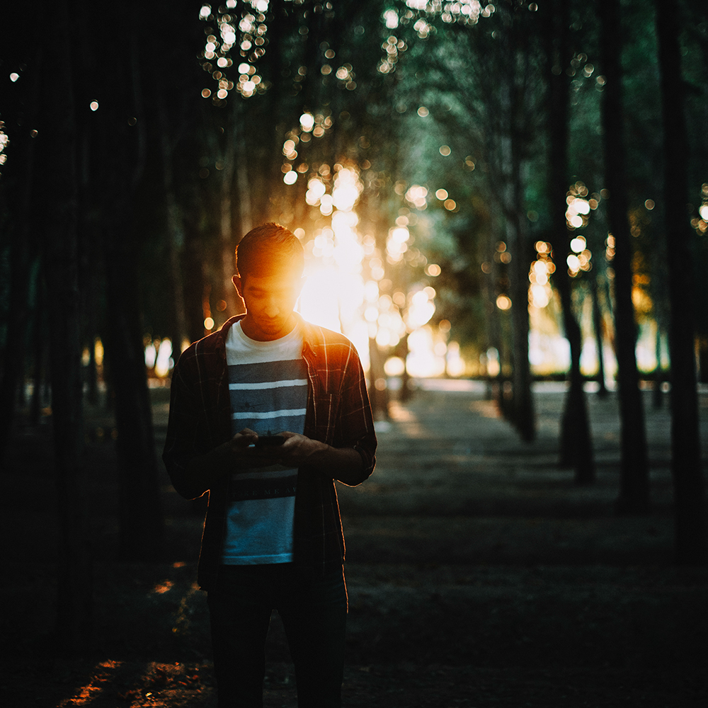

About
Mohammad Amin Yousefi Started his education in Photography in 2015. He's Studying his Bachelor's degree of Art in Photography at the Art University of Isfahan. He has established his career and artistic personality through several exhibitions, writings, photography courses, as well as giving lectures on photography. In recent years, he has further followed his performance in the field of photography through participating in group exhibitions and photo expos. He tries to achieve his own personal concepts from his photographs.